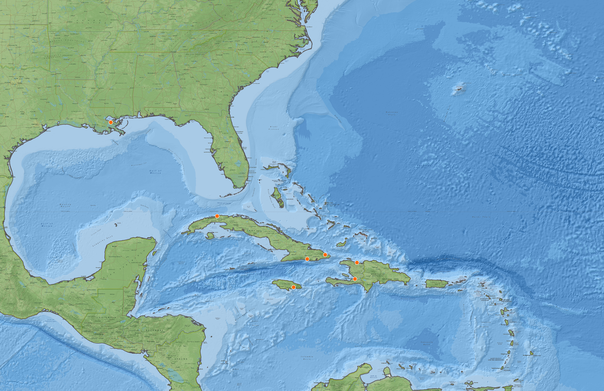
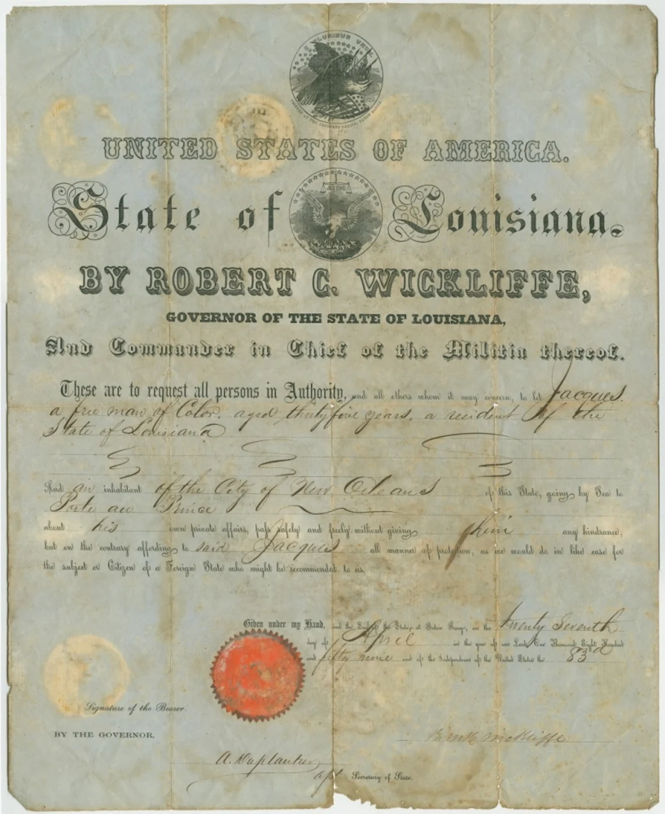
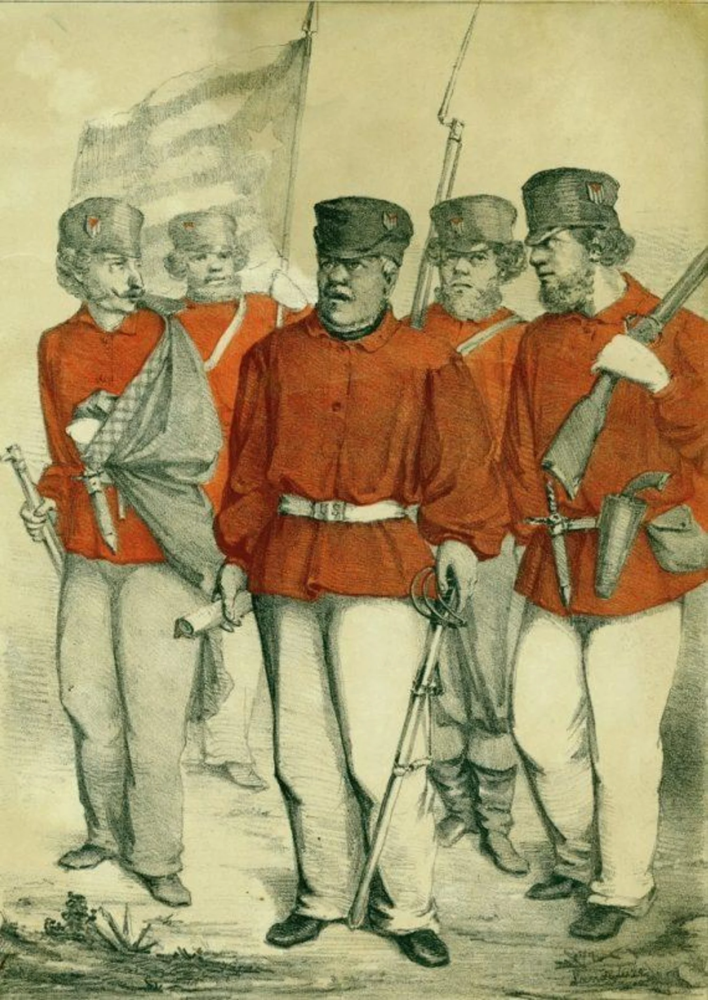

An Atlas of Migration, Settlement, and Cultural Exchange
New Orleans is often understood through its identity as a Southern American city. Yet its history extends far beyond the Mississippi River, shaped by centuries of movement, exchange, and migration across the Greater Caribbean. Through historical maps, migration routes, and spatial analysis, this atlas explores how Caribbean communities influenced the city's urban fabric, cultural identity, and evolving landscape. A city shaped not only by the river, but by the sea. And a city who has learned to live with water, rather than against it.
Across the Caribbean Sea
Mapping the historical connections between the Caribbean and New Orleans.

Migratory Routes
Explore historical migration routes between the Caribbean islands and New Orleans.
Exploration
Click a route to understand and discover its history.
Historical Context
During and after the Haitian Revolution, thousands of refugees from Saint-Domingue migrated to New Orleans, significantly reshaping the city’s population and cultural identity. Between 1809 and 1810, approximately 10,000 refugees arrived, doubling the city's population and nearly tripling its free population of color. By 1830, gens de couleur libre (free people of color) represented 25% of New Orleans’ population, strengthening their social and cultural influence.

Free Man of Color Passport
Jacques, a free man of color, traveling from New Orleans to Haiti, was issued a passport in 1859 which illustrates the lasting connections between the two places. His journey may have reflected family ties, economic interests, or migration prompted by the increasing restrictions on free people of color in Louisiana.
Historical Evidence

In 1849, Narciso López, a native of Venezuela and a former Spanish officer, initiated a campaign to overthrow Spanish rule in Cuba, largely in the name of strengthening the institution of slavery. Lopéz, along with Cuban sugar planters and businessmen, believed that slavery in Cuba was threatened by a weakening Spanish Empire, and only independence could ensure the institution’ssurvival. After his first attempt failed, López relocated to New Orleans, home to a growing population of Cuban immigrants, many of whom were sympathetic to his cause. After the Haitian revolution, Cuba and Louisiana emerged as major sugar exporters, and Louisiana adopted many Cuban sugar technologies such as ox-driven sugar mills. During the 1850s, the US government also had interest in annexing Cuba as a slave state, under the doctrine of Manifest Destiny. Many Americans who supported slavery, including a large number of Louisianians who owned sugar plantations in Cuba, had a vested interest in Cuba’s liberation from Spain.
Content Loading
Any HTML works, for example an <iframe> with a
video or another site's map:
Subsection
Wrap up - Historical information will go here.
Sources
References will be placed here.